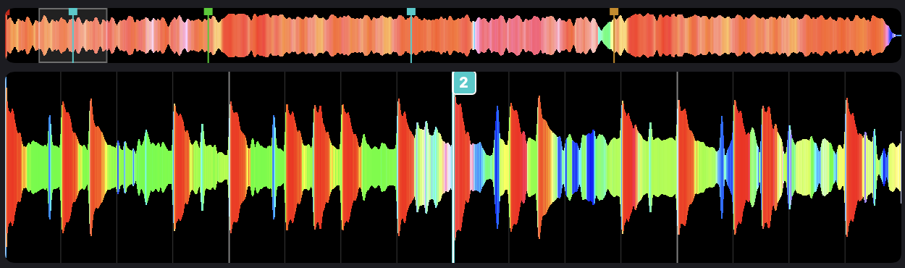

CapDJ
Le copilote du DJ, à côté de Serato DJ Pro.
par DJ Cap Niice · gratuit · version bêta
Télécharger pour MacmacOS 14 ou plus récent · Mac Apple Silicon ou Intel · Serato DJ Pro 4

Ce que fait CapDJ
Le prochain morceau
CapDJ suit ce que vous jouez et propose la suite, à partir de votre bibliothèque, de vos bacs et de vos habitudes de soirée.
Sur la platine en un clic
Boutons 1 et 2 : le morceau choisi se charge directement sur la platine de Serato.
À découvrir
Des titres Apple Music que vous n'avez encore jamais joués, proposés à part.
Points Cue
Des Cue placés selon la structure du morceau (intro, couplet, refrain…). Vous écoutez, vous décalez d'une mesure au clavier, vous validez.
Par lots
Validez un dossier, un bac ou une sélection en une fois. Vos propres Cue sont gardés, et « Remettre comme avant » reste toujours possible.
Rien à importer
CapDJ lit votre bibliothèque Serato telle quelle, sans jamais modifier sa base de données.
Installation
- Ouvrez CapDJ.dmg et glissez CapDJ dans le dossier Applications.
- Ouvrez CapDJ. macOS indique qu'il ne peut pas vérifier l'app : cliquez sur « Terminé ».
- Allez dans Réglages Système › Confidentialité et sécurité. En bas, à côté de « CapDJ a été bloqué », cliquez sur « Ouvrir quand même ». Cette étape ne se fait qu'une fois.
- Dans CapDJ, cliquez sur « Autoriser », puis activez CapDJ dans Confidentialité et sécurité › Accessibilité. C'est ce qui permet de charger les morceaux sur les platines.
CapDJ n'est pas encore signé par Apple, d'où l'étape « Ouvrir quand même ». L'app ne s'installe que sur votre Mac et n'envoie rien sur Internet.